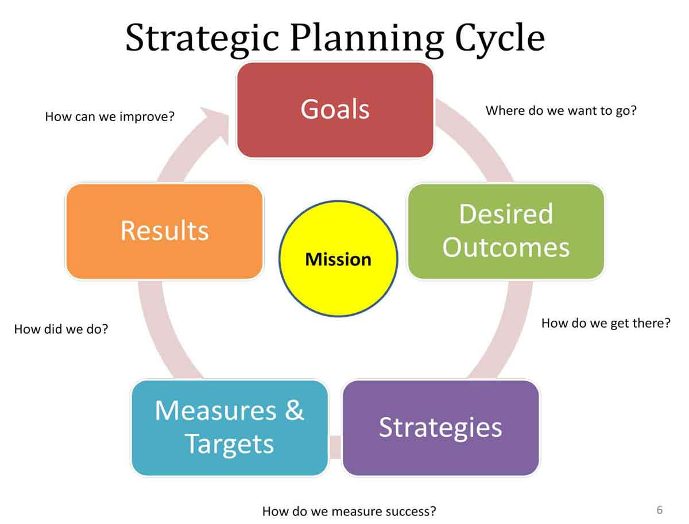

Creative planning is a deliberative technique often embedded within a larger participatory planning process. It's goal is to relieve participants of practical or analytical constraints so that brainstorming and idea generation can flow organically without worrying that one is straying too far 'outside the box'.

To be creative, you just need few thing to remember. They are-
Deliberations, Decisions and Public interactions
Influence, Outcomes and Effects
Analysis and Lessons learned
There are many types of Creative Plans. Few of them are given below :-